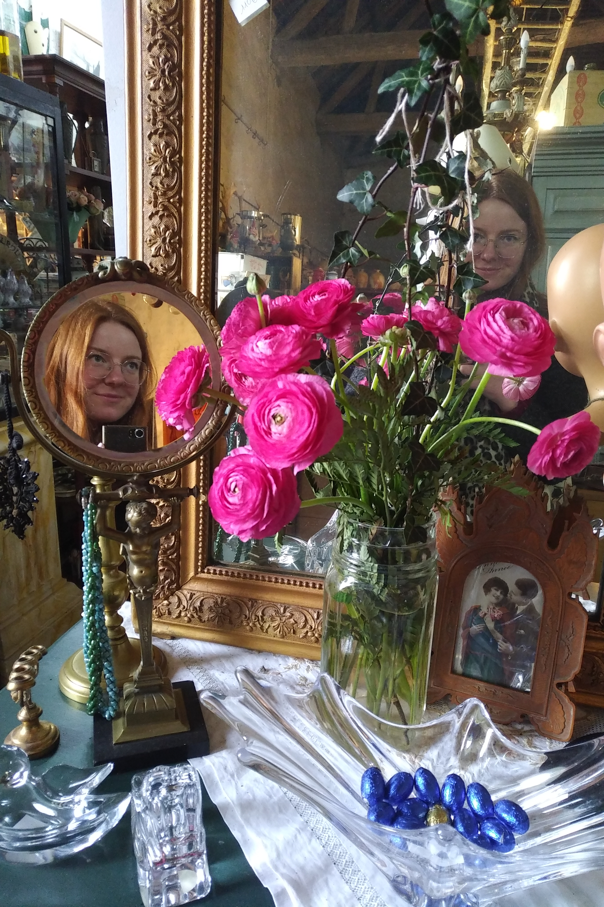

Jag är en doktorand från den LAMSADE, på Université Paris-Dauphine, under överinseende av Sébastien Konieczny, Stefano Moretti och Paolo Viappiani.
Inom ramen för ANR projekten THEMIS, vi studerar variationer av
Inom områden av datavetenskap är jag intresserad av olika ämnen, särskild inom sfärerna av
Som en del av min doktorandkontrakt, jag undervisar på Université Paris-Dauphine sedan september 2021. Jag är också en vald representant för doktoranderna i datavetenskap på LAMSADE rådet, samt på rådet för doktorandskolan SDOSE.
Kontakta mig via mejl:
ariane.ravier[at]lamsade.dauphine.fr
Via post:
Bureau C605
LAMSADE, Université Paris-Dauphine
Place du Maréchal de Lattre de Tassigny
75016 Paris
FRANKRIKE
 Github
Github HAL
HAL